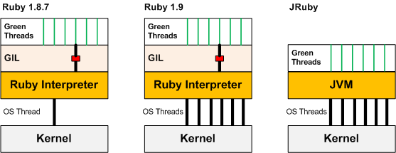

Ruby 3.0 - Single process, multiple challenges
$ whoami
$ whoami
www: coditsu.io
www: mensfeld.pl
twitter: @maciejmensfeld
e-mail: maciej@coditsu.io
Agenda
Ruby 2.*
- Objects ownership management
- GIL/GVL
- Garbage Collector
- Global Method Cache
- Deployment
- Limitations
- Immutability
Agenda
Ruby 3.0 goodies
- Guilds
- Channels
- Immutability
Agenda
Ruby 3.0 challenges
- Objects ownership management
- Giant Guild Lock
- Garbage Collector
- Global Method Cache
Agenda
Ruby 3.0 vs Ruby 2.*
- Memory usage
- Performance
- Deployment
- Design and development
- Compatibility
- Getting ready
Everything said here is based on:
- (Too) Many assumptions
- My talks with Ruby core team members (recently Hiroshi Shibata)
- My experience with Ruby 2.* and Elixir
- Examples from other languages
- Blog posts and discussions amongs Ruby community
- Presentations and other materials on Ruby 3.0
Ruby 2.*
Objects ownership management
There's none.
If you manage to get a pointer/reference to an object, you can work with it (or even unfreeze).
The only limitation is the access control layer.
Ruby 2.*
Objects ownership management
require 'fiddle'
str = 'water'.freeze
str.frozen? # true
memory_address = str.object_id * 2
Fiddle::Pointer.new(memory_address)[1] &= ~8
str.frozen? # false
Ruby 2.*
GIL/GVL
It's a lock around the execution of Ruby code. This means that in a multi-threaded context, only one thread can execute Ruby code at any one time.
The GIL exists to protect Ruby internals from race conditions that could corrupt data.
Ruby 2.*
GIL/GVL
 https://www.igvita.com/2008/11/13/concurrency-is-a-myth-in-ruby/Ruby 2.*
GIL/GVL
I/O-bound operations are tasks whose speed is limited by the speed of a computer’s I/O. These I/O operations are handled outside of the Ruby interpreter in kernel space. Since they are handled outside of the Ruby interpreter, I/O operations that are executed within threads are no longer restricted from running in parallel by the GIL.
https://blog.fluentz.io/learn-how-to-achieve-parallelism-with-ruby-i-o-bound-threads-a29c92aff58cRuby 2.*
Garbage Collector
Ruby Generational Garbage Collector (RGenGC)
https://www.speedshop.co/2017/03/09/a-guide-to-gc-stat.htmlRuby 2.*
Global Method Cache
Global Method Cache is a cache for method definitions.
Ruby uses the global method cache to save a mapping between the receiver and implementer classes.
Ruby 2.*
Global Method Cache
The global method cache allows Ruby to skip the method lookup process the next time your code calls a method listed in it. After your code has called Fixnum#times once, Ruby knows that it can execute the Integer#times method, regardless of from where in your program you call times .
Ruby under a MicroscopeRuby 2.*
Global Method Cache
Careless and often invalidation of this cache can have a quite big impact on our Ruby software. Especially when you have a multithreaded applications, since there’s a single global method cache per process. And constant invalidating, will require a method lookup again and again…
https://mensfeld.pl/2015/04/ruby-global-method-cache-invalidation-impact-on-a-single-and-multithreaded-applications/Ruby 2.*
Global Method Cache
https://mensfeld.pl/2015/04/ruby-global-method-cache-invalidation-impact-on-a-single-and-multithreaded-applications/Ruby 2.*
Deployment
- Single process role per process
- Puma/Sidekiq/Clockwork/Anything else
- Capistrano/Docker/Heroku
- Heavy memory usage
- Long shutdown time
- Slow startup until full performance reached
Ruby 2.*
Immutability
- Object#freeze
- Class#freeze
- Frozen String Literals In Ruby 2.3
- ice_nine gem - deep freezing
- hamster gem - set of persistent, immutable data structure classes
Ruby 2.*
Limitations
- GIL
- Single process role
- GC
- Parallel execution
Ruby 3.0 goodies
Ruby 3.0 goodies
Guilds
- Guilds have at least one thread (and a thread has a fiber)
- Threads in different guilds can run in parallel
- Threads in a same guild can not run in parallel because of GIL/GVL/GGL (Giant Guild Lock)
- A guild can’t access the objects of other guilds
Ruby 3.0 goodies
Guilds
- Guilds are allowed to communicate with each other using channels (Guild::Channel)
- Objects can be copied between guilds (deep copy)
- Objects can be moved between guilds
- Immutable objects (deeply immutable) can be shared between guilds
Ruby 3.0 goodies
Guilds
 http://olivierlacan.com/posts/concurrency-in-ruby-3-with-guilds/
http://olivierlacan.com/posts/concurrency-in-ruby-3-with-guilds/
Ruby 3.0 goodies
Guilds
 http://olivierlacan.com/posts/concurrency-in-ruby-3-with-guilds/
http://olivierlacan.com/posts/concurrency-in-ruby-3-with-guilds/
Ruby 3.0 goodies
Channels
Guilds can communicate with each other using the Guild::Channel interface which allows for the copying or moving of objects across the channel to another Guild.
http://olivierlacan.com/posts/concurrency-in-ruby-3-with-guilds/Ruby 3.0 goodies
Channels
http://olivierlacan.com/posts/concurrency-in-ruby-3-with-guilds/Ruby 3.0 goodies
Channels
http://olivierlacan.com/posts/concurrency-in-ruby-3-with-guilds/Ruby 3.0 goodies
Immutability
- String immutable by default
- Easier / faster immutable structures sharing
- A bit of functional programming FTW
Ruby 3.0 not goodies
Soft typing (proposal - rejected)
def connect(r -> Stream, c -> Client) -> Fiber
def connect(Stream r, Client c) -> Fiber
Ruby 3.0 challenges
Objects ownership management
Objects will have guild owners. It means that Ruby will have to have references to which guild an object belongs.
Ruby 3.0 challenges
Objects ownership management
It means that Ruby will have to have some sort of checker that will run either on:
- every object access
- every object access for objects that were transfered at least once (flag or something?)
- every object access of an object that is not frozen and references in other guilds
Ruby 3.0 challenges
Objects ownership management
Ruby already checks the class of each object on it’s access, so maybe this could be combined together.
Ruby 3.0 challenges
Giant Guild Lock
- Will it be enough for Ruby dynamic character?
- What about runtime metaprogramming?
Ruby 3.0 challenges
Garbage Collector
- Will there be a single GC for all the guilds/threads?
- If so - a single guild will affect other
- If no - there will be a CPU overhead on having multiple GC executions
Ruby 3.0 challenges
Global Method Cache
- Will have even a bigger impact that it has now
- Will have to remain in Ruby
- How to lower its impact on other Guilds
Ruby 3.0 vs Ruby 2.*
Memory usage
No one knows BUT it needs to perform way better (otherwise where's the point?)
Ruby 3.0 vs Ruby 2.*
Performance
Ruby core team aims to make it 3 times faster (Ruby 3x3)
Ruby 3.0 vs Ruby 2.*
Deployment and code execution
- Single process per host
- Different deployment flow
- Hot swapping probably won't happen
- Bigger systems with more specified server roles?
Ruby 3.0 vs Ruby 2.*
Design and development
- More thinking, less coding
- It's already happening
- Designing stuff that won't break everything
- Designing stuff that will be ready for 3.0
- Designing stuff that will use 3.0 to its best
Ruby 3.0 vs Ruby 2.*
Compatibility
- 100% compatible with 2.*
- But then performance and memory usage compatible with 2.*
Ruby 3.0 vs Ruby 2.*
Getting ready
- Stop mutating things (freeze)
- Use YARD
- Design small, flexible components
- # frozen_string_literal: true
Ruby 3.0 vs Ruby 2.*
Getting ready
- Don’t try to unlearn locking and multi threading Ruby 2 approach
- Scaling with guilds won’t be linear so don’t think it will solve all your problems
- Don't invalidate method cache during runtime (too often)
- Don't use non-threadsafe gems and libraries